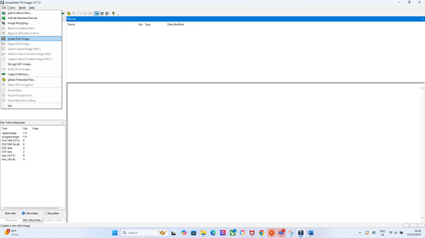

The Challenges of PS3 Digital Forensics
PS3-Data-Acquisition
How to perform a Data Acquisition from a Sony PlayStation 3 console
This section of the website will be dedicated to explaining in detail how to perform a ps3 data acquisition with the internal hard drive located inside the console. The Acquisition will be performed by using the FTKImager tool
Remove the PS3 Hard Drive
1.Power off the PS3 completely and unplug all of the cables attached.
2.Remove the Hard Drive. This will depend on which PS3 model you are using to extract the data from the Hard Drive.
3.Insert the PS3 Hard Drive into a SATA-to-USB adapter or dock for external access.
Connect the Hard Drive to a Workstation
Use a writeblocker(This is to ensure that the data processed remains untampered with or modified)
Connect the PS3 Hard Drive to the workstation via a USB or SATA plug
Ensure that the drive can be recognized by Windows

Launch the FTKImager Application
- Open FTKImager on your Computer and navigate to the top left corner where the file button can be located. What you then want to do next is to select the create disk image as seen in the picture.
- What you should do next is select "Physical Drive" and locate the PS3 Hard Drive
- Click Next and you should see an option of forensic image formats to choose from. Ideally you should choose either E01, which is the standard forensic image format that supports compression or RAW, which is an uncompressed disk image format.
- Click add to select the destination folder for your forensic image and click finish to start the imaging process. (there is also an option for you to enter the case details such as case number, evidence number or examiner details etc.
Verify the Image
Once the Acquisition has been completed, FTKImager should generate MD5 and SHA1 values for verification
If the hash values that are generated match, the image has been processed correctly